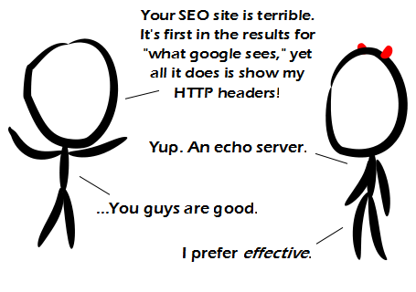

Comic JK 883
When I Feel Like It
⇤
<
?
>
⇥

⇤
<
?
>
⇥
Forum
.
RSS
.
Digg
.
Facebook
.
Reddit
.
Twitter
.
Stumbleupon
Enter your thoughts on number 883 here. Please, no spamming, trolling, or phreaking. Your mother runs an SEO company to help find dorky college boys. I feel bad for Googling "what Google sees" after reading this and expecting to see something other than bad SEO companies. >+1 >Was I the only one who had to Google "SEO company" and then add "wikipedia" to the end to actually get any information? >>We all had to, once. It's not a terribly obvious acronym. Though I guess it is a safe bet that a good percentage of readers here had done that one search already. A few years back, I saw an "SEO" company advertising that for £10,000 they would *guarantee* the number 1 result in a Google search; they showed one of their former clients as proof. You can probably guess the rest: the "success story" was indeed the top result in a specific Google search, but a search that no real customer would actually type... >I don't get it >>It's trivial to make your page appear first in "any" (as in an unspecified one) query, for example this page will appear first in the query "skrulvidonoligosavinas" if no one changes it. >>>or if no-one registers the website skrulvidonoligosavinas.com :) >>>( the search was actually relevant words, but they were arranged as a specific phrase, contained within quotes, in an order that was artificial. It was immediately obvious that it was wrong, pointless and a waste of £10,000, but a few people I showed it to "didn't get" why it was so blatantly wrong... ) >>>> I "got" why it was wrong. I didn't get that the punchline followed clearly from the setup. >>>>>because it wasn't a punchline... I was merely sharing a semi-relevant anecdote... though I could guarantee a great punchline, for only £10,000... >>>>>> an amp that goes to 13? >>>>>>>one that goes to 14 costs twice as much, as it has to be Feng Shui-ed to remove the bad karma of having 13... Mom's what?